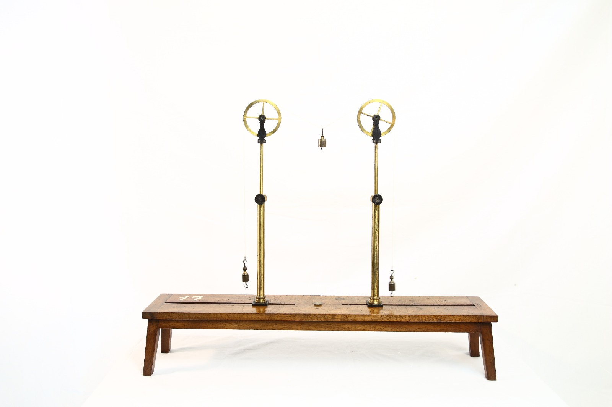

Apparecchio per le forze

Scuola di provenienza: Liceo Statale "P.E. Imbriani", Avellino
Settore: Meccanica
Costruttori: Alemanno e Castaldi, Torino
Materiali: Legno e Ottone
Accessori: Pesetti
Stato di conservazione: Legno rovinato
Descrizione: Questo strumento ha il compito di mettere direttamente in pratica le equazioni cardinali della statistica. Da un punto di vista tecnico, un´insieme di forze che condividono tutte la stessa direzione prende il nome di sistema di forze parallele. Lo strumento presenta una base lignea sulla quale sono fissate due aste di ottone. Su queste aste sono posizionate due carrucole con lo scopo di permettere la traslazione verticale e la rotazione. Per l´equilibrio in assenza di ulteriori forze esterne (pesi aggiuntivi appunto), all´altra estremità della fune di rimando di ciascuna carrucola è fissato un ulteriore pesetto con la funzione di contrappeso.